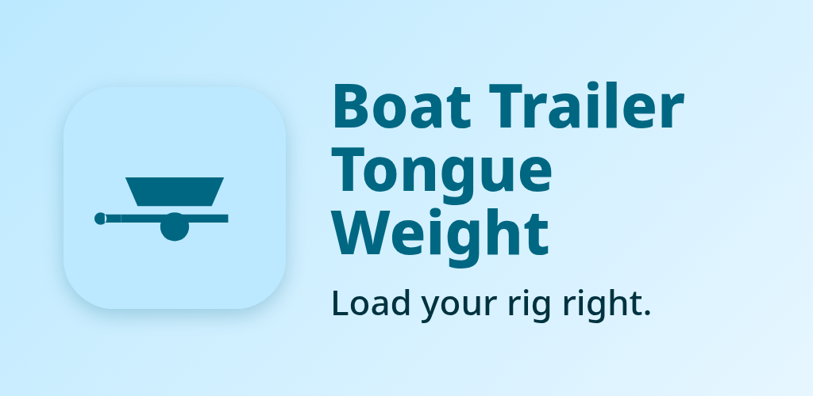

Bootstrailer Stützlast
Stützlast, Achslasten und Zugrenzen deines Bootsgespanns prüfen.



Über die App
Prüfe, ob dein Bootstrailer richtig beladen ist, bevor du die Slipanlage verlässt. Bootstrailer Stützlast betrachtet Zugfahrzeug, Trailer und Boot als ein Gespann. Gib die Werte von Türaufkleber, Kupplungsschild und Trailer-Typenschild ein, füge hinzu, was auf dem Trailer liegt, und sieh auf einen Blick, ob das Gespann besteht. Alles läuft auf deinem Handy. Die App hat keine Internetberechtigung und braucht kein Konto. WAS GEPRÜFT WIRD - Stützlast in Prozent, mit 7 bis 10 Prozent als Ziel - Maximale Stützlast von Kupplung und Aufnahme - Achslast des Trailers und zulässiges Gesamtgewicht des Trailers - Anhängelast, Nutzlast, zulässiges Gesamtgewicht des Fahrzeugs und des Zugs (GCWR) - Hinterachslast, wenn du Radstand und Kupplungsüberhang einträgst Jede Prüfung zeigt Bestanden, Warnung oder Durchgefallen. Der leere und der beladene Trailer stehen nebeneinander, so siehst du, was Kraftstoff, Wasser und Ausrüstung ändern. FÜR DIE SLIPANLAGE GEMACHT - Einachs- und Tandemachs-Trailer - Ladeposten mit Gewicht und Position: Rumpf, Motor, Kraftstoff, Fischbehälter oder Ballastwasser, Ausrüstung - Kraftstoff- und Wassertanks mit Füllstand-Regler. Das Gewicht ergibt sich aus Tankgröße und Füllstand. - Vorlagen für Außenbordmotoren von 2,5 bis 350 PS und für gängige Ausrüstung - Tipps für 7 bis 10 Prozent: Fischbehälter leeren, Boot auf dem Trailer nach vorn schieben, Ausrüstung verschieben oder die Achse versetzen - Beliebig viele gespeicherte Gespanne. Jedes Gespann lässt sich in der Liste bearbeiten, duplizieren oder löschen. - PDF-Zusammenfassung zum Speichern oder Teilen - Startbildschirm-Widget für dein zuletzt benutztes Gespann - Imperiale oder metrische Einheiten - Heller und dunkler Modus, Layouts für Handy und Tablet, Beschriftungen für Screenreader und große Touch-Flächen SO WIRD DIE STÜTZLAST BESTIMMT Die App schätzt die Stützlast aus Gewicht und Position jedes Postens relativ zur Achse. Sie misst nichts. Die Ergebnisse sind nur so gut wie die Gewichte und Abstände, die du eingibst. DATENSCHUTZ Die App hat keine Internetberechtigung, kein Konto, keine Werbung und keine Analyse. Deine Gespanne bleiben auf deinem Handy und sind nicht in der Cloud-Sicherung enthalten. Ein PDF verlässt das Handy nur, wenn du es teilst oder speicherst. KAUF Die App ist ein kostenpflichtiger Download. Danach sind alle Funktionen enthalten: unbegrenzt viele Gespanne, alle Vorlagen, PDF-Export und Widget. Es gibt keine In-App-Käufe und kein Abo. SICHERHEIT Diese App schätzt Lasten anhand der Zahlen, die du eingibst. Sie ist eine Planungshilfe, keine geeichte Waage. Halte dich immer an die Werte von Fahrzeug, Kupplung und Trailer und wiege dein Gespann im Zweifel auf einer geeichten Waage. Du bist für eine sichere und legale Fahrt verantwortlich.